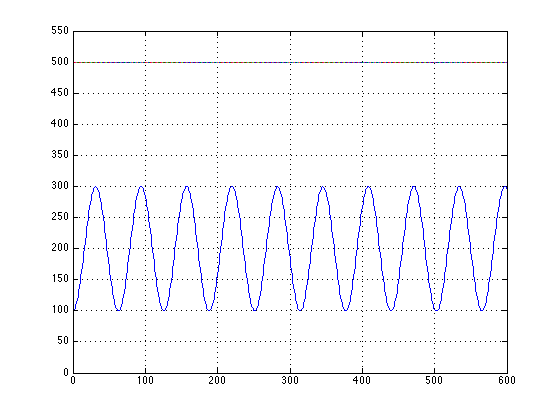
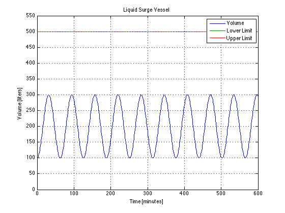

Braatz Chapter 1, Example 3
JCK 12/6/2012
Contents
Problem Statement
Consider a liquid surge vessel with a steady-state volume of 500 liters and steady-state inlet and outlet flow rates of 50 liters/minute. Determine the liquid volume as a function of time if the inlet flow rate is Fin(t) = 50 + 10 sin(0.1t) and the outlet flow rate remains constant at 50 (both flow rates are in units of liters/minute). The liquid is a dilute aqueous solution.
Problem Parameters
The problem does not specify an initial condition, or a time span for simulation which are added here.
tspan = [0 600]; Vinitial = 100; Vmin = 0; Vmax = 500;
Inputs and Outputs
The inputs and outputs are expressed as functions of time.
Fin = @(t) 50 + 10*sin(0.1*t); Fout = @(t) 50;
Create the ODE Model
A model consisting of a differential equation is expressed as a function of the independent variable time, and of the state variable Volume.
f = @(t,V) Fin(t) - Fout(t);
Integration
Vsoln = ode45(f, tspan, Vinitial);
Evaluate the Solution
t = min(tspan):max(tspan); V = deval(Vsoln,t);
Plot
plot(t,V,t,Vmin,t,Vmax,'Linewidth',1.5);
axis([min(tspan) max(tspan) 0.9*Vmin 1.1*500]);
grid;
 Annotate the plot
The following annotaitons are a minimal set that should be part of every plot.
title('Liquid Surge Vessel'); xlabel('Time [minutes]'); ylabel('Volume [liters]'); legend('Volume','Lower Limit','Upper Limit');